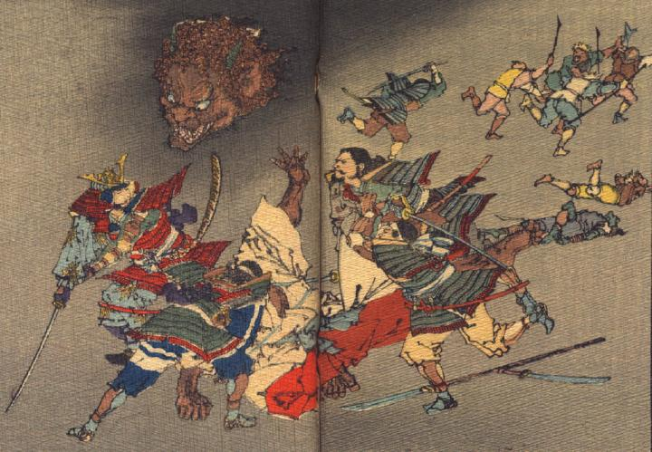

源頼光一行が酒呑童子たちに襲いかかっている。4人の武士が酒呑童子に切りつけており、切り離された酒呑童子の首が宙を飛んでいる。もう1人の武士は、逃げる鬼たちを追いかけている。
出典：親書誌：U426_nichibunken_0113：Les Ogres d'Oyeyama／日付：2006／資源識別子：U426_nichibunken_0113_0006_0000
Copyright (c)2010- International Research Center for Japanese Studies, Kyoto, Japan. All rights reserved.